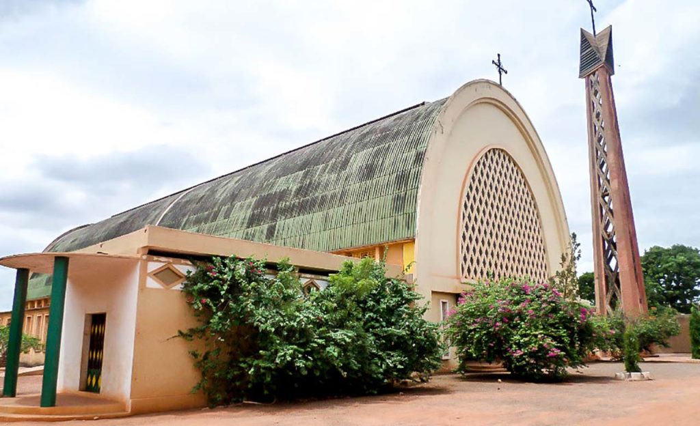
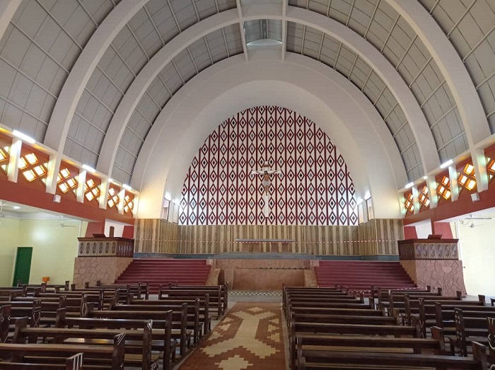

La cathédrale Notre-Dame de Lourdes est un joyau architectural situé au cœur de Bobo-Dioulasso. Construite au début du XXe siècle, elle est un symbole fort de la foi chrétienne dans la région. Son architecture impressionnante, mêlant des éléments gothiques et coloniaux, en fait un lieu incontournable pour les visiteurs intéressés par l'histoire religieuse et culturelle de la ville.
Cathédrale Notre Dame de Lourdes de l'Archidiocèse de Bobo-Dioulasso est née de l’Église de la "Grande Mission " sous l'épiscopat de Monseigneur André Dupont. La première pierre a été posée en 1957 par le président Daniel Ouezzin Coulibaly et l'inauguration en 1960. Elle sous la protection de Notre Dame de Lourdes.
cathédrale Notre-Dame-de-Lourdes de Bobo-Dioulasso est un symbole de la culture catholique et un lieu de culte important pour la communauté locale. Elle a été inaugurée en 1961 et a accueilli des événements significatifs, tels que la célébration des reliques de saint Jean Bosco en 2012. Malgré ses défis d'entretien, la cathédrale a été rénovée et est devenue un lieu de prière et de célébration pour les fidèles. La réhabilitation de la cathédrale a été un pari gagné pour l'archidiocèse de Bobo-Dioulasso, avec des efforts conjoints des gouvernements, des autorités coutumières et religieuses, ainsi que des contributions des fidèles.
